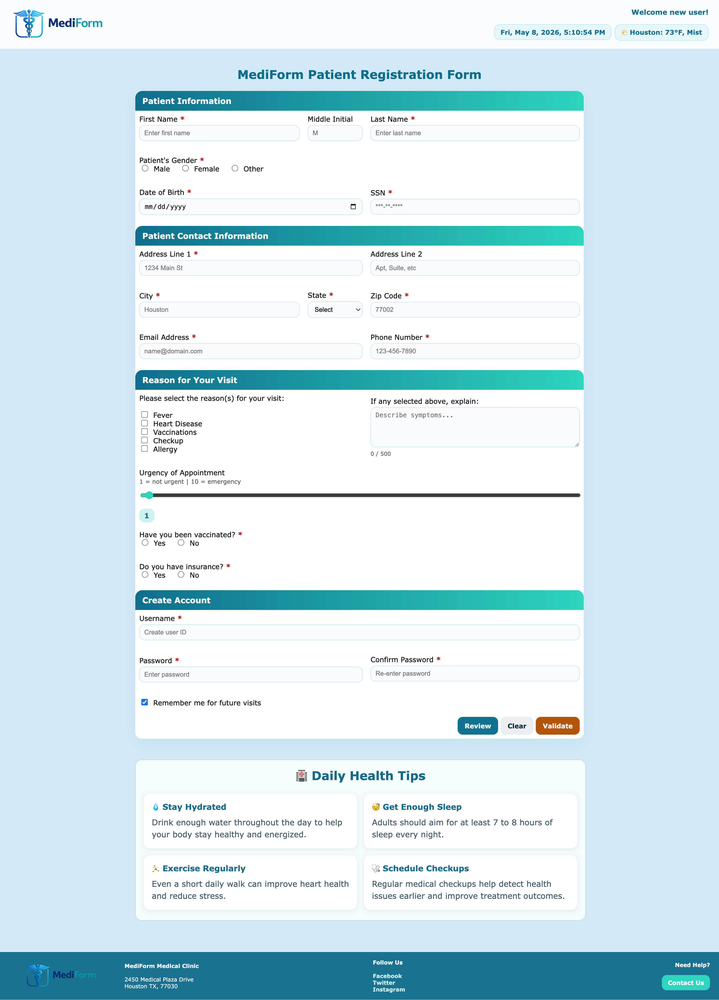

Nikki Safarova | May 8, 2026
My website is a patient registration system called MediForm Medical Clinic. The form allows users to enter personal information, contact details, health visit reasons, vaccination and insurance information, and account credentials. The website performs live JavaScript validation for all required fields and provides immediate feedback when invalid data is entered. The form also includes a review section where users can verify all entered information before final submission.
For Assignment 4 requirements, I implemented multiple advanced JavaScript and browser storage features. I used the Fetch API in two different ways: first, to dynamically load the list of U.S. states from a separate JSON file, and second, to retrieve live weather data from the OpenWeather API and display it in the page header. I also added an iframe on the page that displays a custom “Daily Health Tips” section with responsive health information cards.
To satisfy the content protection requirement, I implemented both a fixed header and fixed footer so important page elements always remain visible while scrolling. For cookie usage, the website remembers the user’s first name and displays a personalized “Welcome back” message when they revisit the page. A “Start as new user” option was also implemented to clear cookies and reset the form. In addition, local storage is used to automatically save and restore non-sensitive form information so users do not lose progress when refreshing or reopening the page.
For the time-based event requirement, I implemented a live updating date and clock in the header and also added a session timeout popup. If the user stays inactive for too long, the website displays a warning countdown and automatically resets the form for security purposes.
